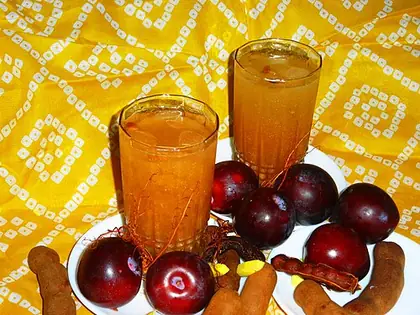

Drinks & juices · Popular in Northern plains, Central forests and South India
Imli sharbat
Imli sharbat is made with wild tamarind, a favourite in Northern plains, Central forests and South India.

How do you make imli sharbat?
Soak tamarind with jaggery, strain, then add roasted cumin, black salt and dry ginger. Dilute with cold water.
Wild ingredients
- Tamarind (Tamarindus indica): in season January to April
Watch the recipe

Video: Sanjeev Kapoor Khazana on YouTube